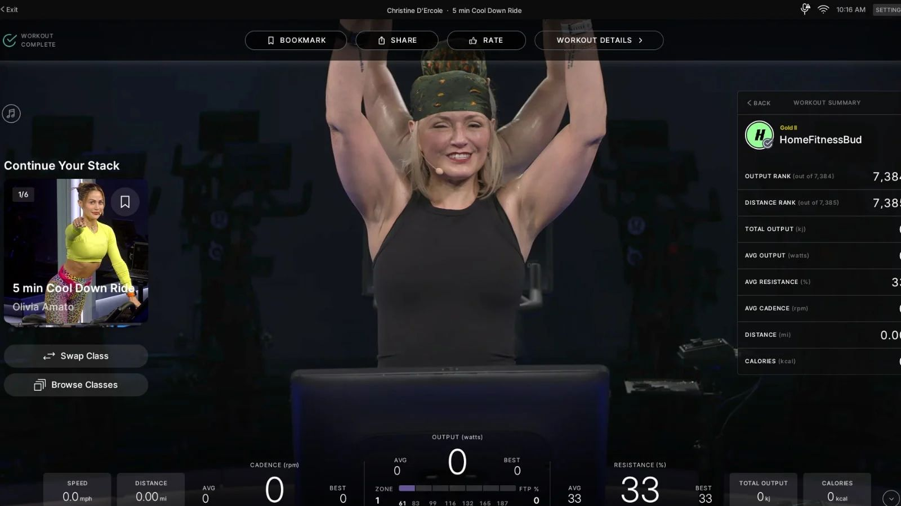
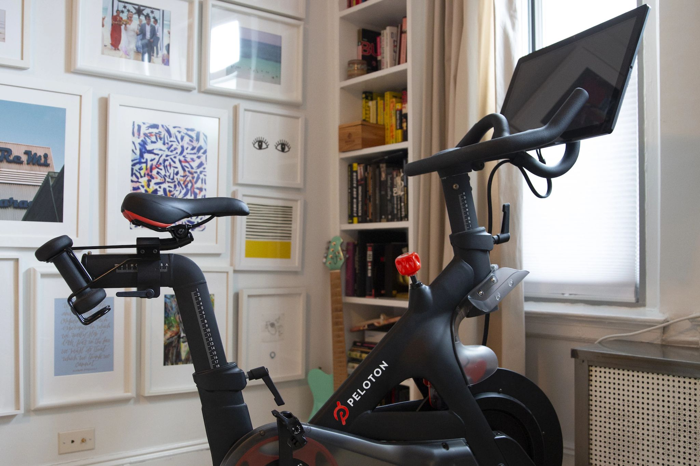

← All case studies
 Habit Formation
Habit Formation
Post Class Concepts

01
Context & Background
- The post-class moment is one of the highest-leverage, lowest-utilized touchpoints in the member journey. Most members exit class before ever seeing the post-class screen, and those who do rarely take a meaningful next action.

02
Methodology & Goals
Live Intercept Usability Testing with Members (10)
- Customer need: members lack a post-class experience that feels personal, timely, or relevant, regardless of where they are in their Peloton journey.
- Business need: Peloton's "Golden Behaviors" — predictive of long-term retention — are best influenced at the post-class moment, and the team wasn't capitalizing on it.
03
Timeline
Phase 1
Project Kick-off
- Stakeholder meetings
- Determining method
- Creating research brief
- Gathering stakeholder input
- Designing screener & moderation guide
- Meeting with studio managers to set up intercept testing
Phase 2
Conduct Research
- Getting Figma assets from designers
- Performing usability testing with 10 Peloton members
Phase 3
Analysis & Deliverable Prep
- Qualitative coding of interviews
- Behaviors, themes & high-impact moments turned into insights and recommendations
Phase 4
Share Out
- Report created and shared broadly with internal and external teams
- Collaboration with product & design to prioritize and refine features based on recommendations
04
Intercept Usability Summary
Insight
The post-class recommendation (PCR) resonated well when placed at the end of class, before the cooldown period — members were more willing to interact with it there.
Recommendation
Move forward with PCR placement during the cooldown period to enable more interaction with the feature.
Insight
Members struggled to discover and understand the swipe gesture used to switch to a different PCR — it didn't feel natural.
Recommendation
Remove the swipe interaction and replace it with an explicit "swap class" call-to-action button.
Insight
Access to Peloton's on-demand library via "Browse Classes" caused confusion post-class.
Recommendation
Remove the ability to view the on-demand library post-class; members were satisfied browsing the way they already did.